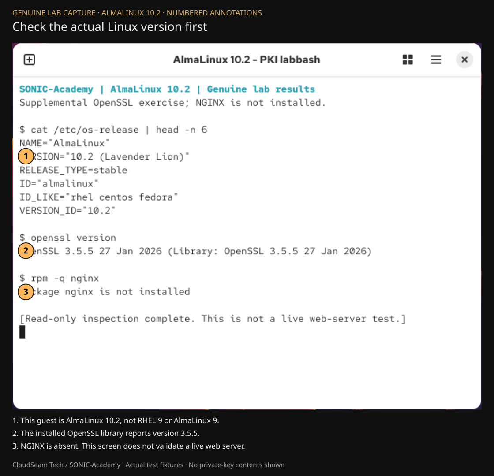
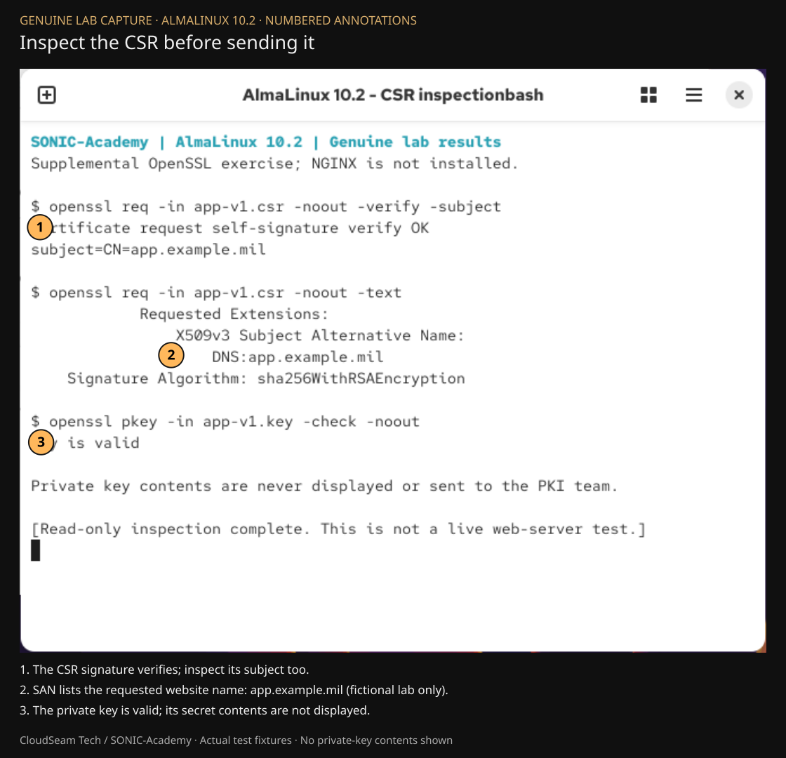
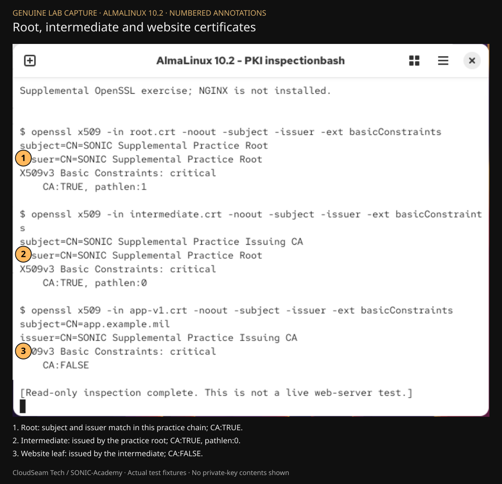
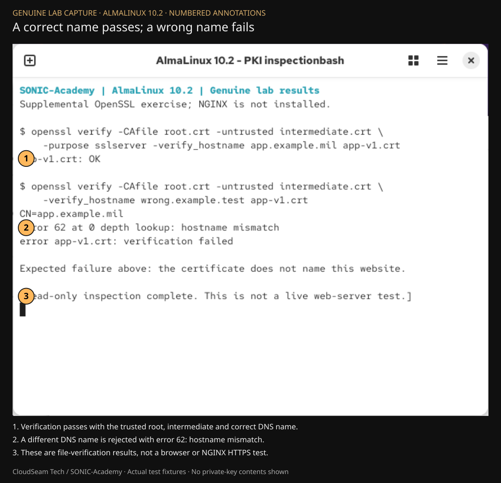
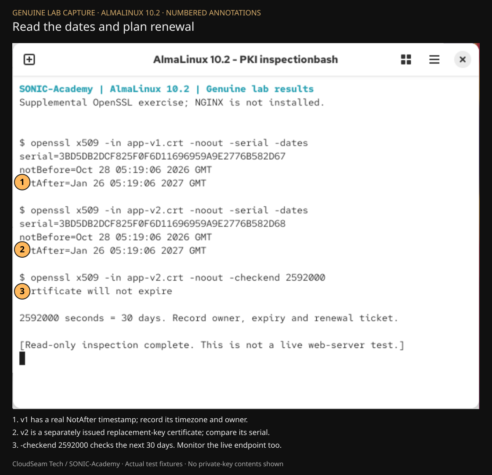
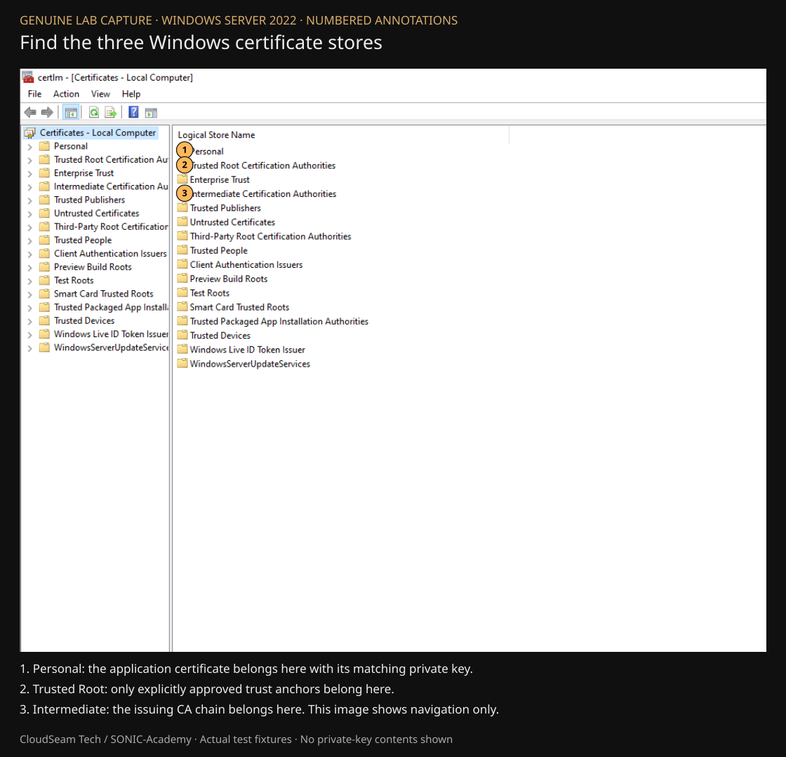
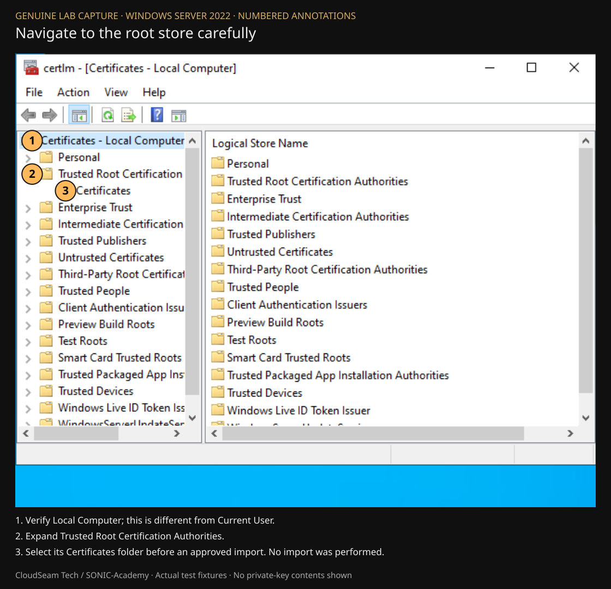

PKI Certificate Management
Genuine captures from the local VMware lab, with numbered annotation overlays. The untouched PNG originals are linked below each image.
AlmaLinux 10.2 is supplemental. These captures do not establish NGINX HTTPS or IIS validation. Windows images show certificate-store navigation only. No private-key contents are displayed.
Check the actual Linux version first
AlmaLinux 10.2 / OpenSSL 3.5.5 / VMware Workstation

Genuine guest terminal capture. Scripted read-only inspection of actual supplemental test artifacts; not NGINX or browser validation. Cropped and numbered; original PNG retained. Fictional app.example.mil name retained from the existing TLS class.
Untouched original PNGInspect the CSR before sending it
AlmaLinux 10.2 / OpenSSL 3.5.5 / VMware Workstation

Genuine guest terminal capture. Scripted read-only inspection of actual supplemental test artifacts; not NGINX or browser validation. Cropped and numbered; original PNG retained. Fictional app.example.mil name retained from the existing TLS class.
Untouched original PNGRoot, intermediate and website certificates
AlmaLinux 10.2 / OpenSSL 3.5.5 / VMware Workstation

Genuine guest terminal capture. Scripted read-only inspection of actual supplemental test artifacts; not NGINX or browser validation. Cropped and numbered; original PNG retained. Fictional app.example.mil name retained from the existing TLS class.
Untouched original PNGA correct name passes; a wrong name fails
AlmaLinux 10.2 / OpenSSL 3.5.5 / VMware Workstation

Genuine guest terminal capture. Scripted read-only inspection of actual supplemental test artifacts; not NGINX or browser validation. Cropped and numbered; original PNG retained. Fictional app.example.mil name retained from the existing TLS class.
Untouched original PNGRead the dates and plan renewal
AlmaLinux 10.2 / OpenSSL 3.5.5 / VMware Workstation

Genuine guest terminal capture. Scripted read-only inspection of actual supplemental test artifacts; not NGINX or browser validation. Cropped and numbered; original PNG retained. Fictional app.example.mil name retained from the existing TLS class.
Untouched original PNGFind the three Windows certificate stores
Windows Server 2022 / Certificates (Local Computer)

Genuine Windows certificate-console capture. Navigation only; no certificate imports, IIS operations or trust changes performed. Cropped and numbered; original PNG retained.
Untouched original PNGNavigate to the root store carefully
Windows Server 2022 / Certificates (Local Computer)

Genuine Windows certificate-console capture. Navigation only; no certificate imports, IIS operations or trust changes performed. Cropped and numbered; original PNG retained.
Untouched original PNGCloudSeam Tech / SONIC-Academy · Captured 2026-10-28